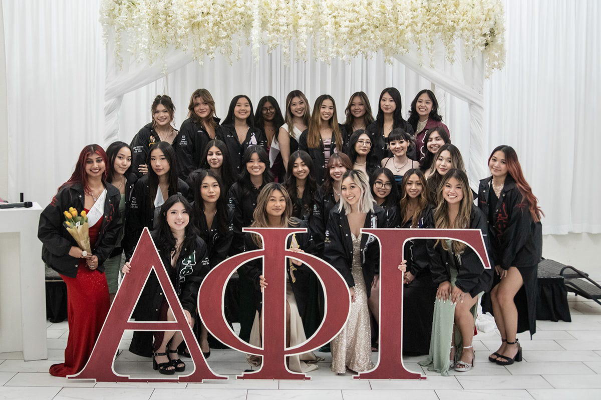

APhiG Website

The Problem
Alpha Phi Gamma at ASU had no digital presence during recruitment season. As recruitment chair, I needed a way to introduce the sorority to potential new members — its values, culture, and people — without relying entirely on in-person events. There was nowhere for interested students to go to learn about who we were before showing up to a rush event.
Process
I started by mapping out what a prospective member would actually want to know: who we are, what we stand for, how to join, and who's already in it. That became the site's architecture — Home, About, Philosophy, Sisters, Join, and Contact. Since I was simultaneously taking a web development class, I used the project as an opportunity to apply what I was learning in a real, meaningful context. I designed and built every page by hand using vanilla HTML and CSS, no frameworks or templates.
What Worked & What Didn't
The site succeeded in giving the chapter a real online presence for the first time. Recruitment that semester had a clear place to direct interested students, and the Sisters page helped humanize the organization before people ever walked through the door. What didn't work as well: with only HTML and CSS and no CMS, updating content like new member photos or event info required manual code edits — not sustainable for a chapter where leadership rotates every year.
Design Decisions
I wanted the site to feel warm and approachable rather than formal. APhiG is an Asian-interest sorority, so the design needed to reflect both professionalism and community. I kept the layout clean and content-forward — letting photos and personal bios do the heavy lifting rather than over-designing around them. Every page was built with a prospective member's questions in mind, not the organization's internal structure.
The Solution
A lightweight, multi-page static site covering the full recruitment journey — from first impression on the homepage through to the join form. No login, no backend, no dependencies. Just fast, accessible pages that worked on any device and could be shared via a single link.
Why This Was the Right Call
For a student org with no budget, no dedicated tech support, and a hard deadline tied to recruitment season, a static site was the right choice. It could be hosted for free, loaded instantly, and required no infrastructure to maintain. More importantly, it solved the actual problem: giving APhiG a presence online that felt real and human. Sometimes the simplest solution is the most honest one.